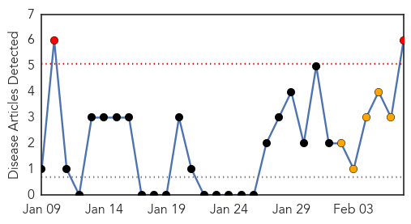
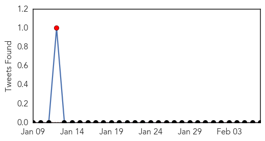
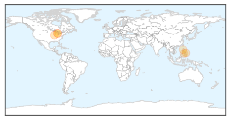
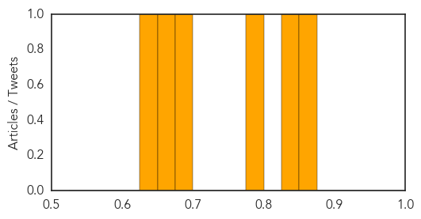

Toggle navigation
Early Warning
Daily Alerts
Dengue Fever
Feb 07, 2014
30 Day Trends
Web: 2
alerts
, 5
warnings
Twitter: 0
alerts
, 0
warnings
Top Articles:
0.862
'Two-faced' protein holds clues to West Nile
0.837
Decoding Dengue And West Nile: Researchers Take Steps Toward Control Of Health Proble
0.782
Philippines: Three months on from typhoon Haiyan
0.692
Decoding Dengue and West Nile: U-M researchers take steps toward control of growing public health problems
0.661
UNICEF prioritizes the hardest-hit children as Typhoon Yolanda-damaged communities move down the road to recovery - Philippines
0.634
UNICEF prioritizes the hardest hit children as Typhoon-damaged communities move down the road to recovery
Top Tweets:
No tweets found for Feb 07, 2014
Web/News Articles

Tweets

Article Locations

Article Confidences
